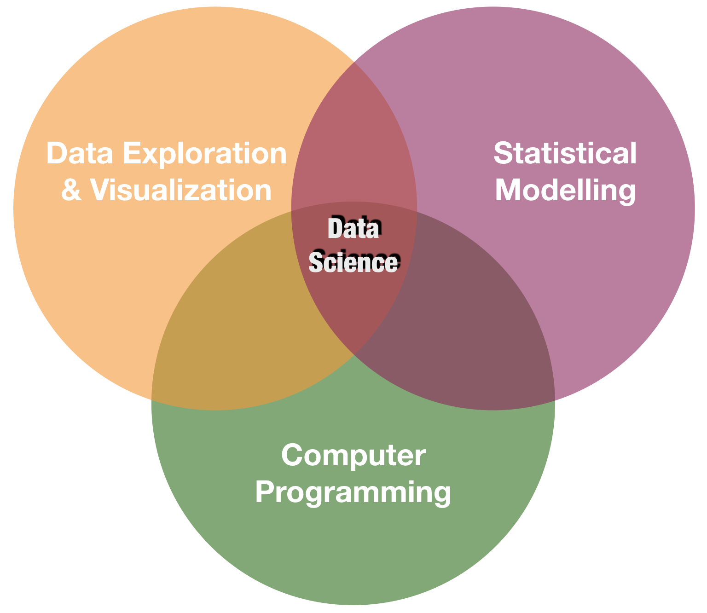

Datenanalyse mit R
1 - Einführung in R und RStudio
Saskia A. Otto
BSH 11/02 - 13/02 2019
Was versteht man unter 'Datenanalyse' oder 'Data Science'?
Data science erfordert eine Mischung an Fähigkeiten in 3 Hauptgebieten:

Folgendes wirst Du in diesem Kurs lernen:
Einführung in die R Umgebung

Was ist R?
R ist eine Progammiersprache


"R is a system for statistical computation and graphics. It is a GNU project which is similar to the S language and environment which was developed at Bell Laboratories by John Chambers and colleagues. R can be considered as a different implementation of S…..R is available as Free Software under the terms of the Free Software Foundation’s GNU General Public License in source code form. It compiles and runs on a wide variety of UNIX platforms, Windows and MacOS."
(from http://r-project.org/)
Wozu R?
Wo gibt es R?
Direkt auf der Website https://cran.r-project.org
Verwende R mit

- Ein Software Programm mit einer GUI für R (trademark of RStudio, Inc.).
- Hilft R Code zu schreiben und auszuführen und Daten zu analysieren.
- Integriert einen Texteditor mit einem Daten- und Paketmanager.
- Bietet Versionskontrollen, LaTeX Integration, keyboard shortcuts, und sog. debugging tools.
- Ist mittlerweile zum Standard bei R usern geworden.
- Es gibt die Software als frei verfügbare und als kommerzielle Version auf www.rstudio.com
- Läuft lokal (Windows, Mac, and Linux) oder in einem Webbrowser der sich mit einem RStudio Server verbindet.


Vorteile von Skripten
- Transparenz und Reproduzierbarkeit - Nicht nur die Resultate sind einsehbar sondern jeder einzelne Schritt der Analyse.
- Flexibilität - Einige Analysen brauchen nur ein paar kleine Veränderungen bestehender R Skripte.
- Austausch - Theoretisch sollte jeder R user Dein Skript verstehen um Code leichter auszutauschen.
Mit Skripten in RStudio arbeiten
- Öffne ein neues Skript (File ➔ New File ➔ R Script)
- Schreibe Code in das leere Skript, z.B.
2+2 - Sende den Code an die R Konsole:
- Kopiere den Code Schnipsel und füge ihn in die Konsole ein (NICHT empfohlen!)
- Drück ctrl + enter ➔ Ausführung des Codes der entsprechenden Zeile (wo der Cursor gerade ist); anschl. springt der Cursor eine Zeile weiter.
- Markiere den Code Abschnit (können mehrere Zeilen sein) der ausgeführt werden soll und drücke ctrl + enter
Style guide - Allgemeine Empfehlungen
- Folge einem style guide und wechsel nicht.
- Jedes Skript sollte so kurz wie möglich und so komplex wie nötig sein.
- Verwende "#" um code auszukommentieren; mehrere Zeilen lassen sich mit cmd+shift+c auf einmal auskommentieren
- Anfangs wirst Du noch kommentieren was Du machst, später sollte es aber nur um das warum gehen.
- Benutze als Zuweisungsoperator
<-(NICHT=)
Style guide - Objektnamen
- Variablenamen sollten Hauptwörter und Funktionsnamen Verben sein.
- Objektnamen dürfen nicht mit einer Zahl beginnne.
- Verwende keine Sonderzeichen (z.B. !,/,%).
- Versuche keine Objektnahmen zu verwenden, die es bereits als Funktionsnamen gibt.
- Verwende Kleinbuchstaben.
- Verwende den Unterstrich und keine Leerzeichen in Namen.
- Folgendes ist in Ordnung:
- a, x, my_list, my_dat, dat1
- Nicht empfohlen:
- 1_a, c, list, _mydat, $dat
Style guide - Leerzeichen
Füge zur Übersicht ein Leerzeichen ein
- vor und nach allen Operatoren (=, +, -, <-, etc.)
- beim Auflisten von Argumenten in Funktionen
- nach jedem Komma, aber nicht davor
Jedesmal bevor Du loslegst: setze den Pfad des Arbeitsverzeichnis
Besser: Verwende R Projekte
R Projekte (Forts.)
Neue Ordnerstruktur
Vorteile von Projekten
- Vordefinierte Ordnerstruktur
- Das Arbeitsverzeichnis wird automatisch gesetzt
- Alle Skripte in diesem Projekt sind sofort verfügbar
- Öffnet eine neue R Instanz so dass man zwischen verschiedenen Instanzen wechseln kann
Arithmetik and Funktionen in R
Einfache Berechnungen
In seiner einfachsten Form ist R genauso wie ein einfacher Taschenrechner.
Einfache Berechnungen
Folgende arithmetische Operatoren gibt es:
- Addition:
+ - Subtraktion:
- - Multiplikation:
* - Division:
/ - Potenzierung:
^
Einfache Berechnungen
Folgende arithmetische Operatoren gibt es:
- Addition:
+ - Subtraktion:
- - Multiplikation:
* - Division:
/ - Potenzierung:
^
5 + 5
5 - 5
3 * 5 + 2
(5 + 5) / 2
Einfache Berechnungen
Folgende arithmetische Operatoren gibt es:
- Addition:
+ - Subtraktion:
- - Multiplikation:
* - Division:
/ - Potenzierung:
^
5 + 5
## [1] 10
5 - 5
## [1] 0
3 * 5 + 2 # multipl. dann add.
## [1] 17
(5 + 5) / 2 # add. dann div.
## [1] 5
Einfache Berechnungen (Forts.)
R hat aber auch Funktionen mit denen man anspruchsvollere Manipulationen durchführen kann, die durch Klammern kombinierbar sind:
a <- c(1,2,3,4)
c <- (a + sqrt(a))/(exp(2)+1)
Einfache Berechnungen (Forts.)
R hat aber auch Funktionen mit denen man anspruchsvollere Manipulationen durchführen kann, die durch Klammern kombinierbar sind:
a <- c(1,2,3,4)
c <- (a + sqrt(a))/(exp(2)+1)
Reihenfolge der Berechnung: von der innersten zur äußersten Klammer - wie bei einem Taschenrechner.
sqrt(a)undexp(2)- dann
azusqrt(a)und1zuexp(2)addieren - dann teilen (sqrt = square root, exp = exponent)
+ prompt
Wenn das sog. prompt Zeichen von ">" zu "+" wechselt ist das ein Zeichen, dass der Befehl noch nicht zu Ende ist. Meist fehlen eine oder mehrere schließende Klammern. Führe entweder den Befehl zu Ende oder drücke (2mal) auf esc.
Eine kurze Einführung zu Funktionen in R
- Funktionen sind das Herzstück von R
- Sie bestehen aus einem Codeblock welcher R Instruktionen übergibt.
- Einige Funktionen sind in R's Basispketen enthalten, andere sind erst durch die Installation und das Laden bestimmter Zusatzpakete verfügbar.
- R Funktionen arbeiten ähnlich wie Funktionen in anderen Programmen:
Eine kurze Einführung zu Funktionen in R
- Funktionen sind das Herzstück von R
- Sie bestehen aus einem Codeblock welcher R Instruktionen übergibt.
- Einige Funktionen sind in R's Basispketen enthalten, andere sind erst durch die Installation und das Laden bestimmter Zusatzpakete verfügbar.
- R Funktionen arbeiten ähnlich wie Funktionen in anderen Programmen:
Hilfe aufrufen
Jede Funktion hat seine eigene Hilfe die mit help() oder ? aufgerufen werden kann:
help("mean")
?mean
Zum Durchsuchen der Hilfsseiten:
??mean
help.search("mean")
Listet alle Funktionen welche das Wort "mean" enthalten:
apropos("mean")
R Dokumentation für die Funktion mean
R Dokumentation für die Funktion mean
Aufgabe
Quiz 1: Einfache Berechnungen
Öffne ein neues Skript in Deinem RStudio und sichere es gleich unter einem Namen Deiner Wahl ab. Führe folgende Berechnungen durch und überprüfe Deine Ergebnisse indem Du sie in die Felder unten einträgst:
- Substrahiere 10 von 23, dann multipliziere mit 2.
- Substrahiere 10 von 23, dann multipliziere mit 2, dann addiere 100, dann teile alles durch 5.
- Substrahiere 23 von 10, dann multipliziere mit -10, dann nimm die Quadraturzel (verwende die
sqrt()Funktion).
R berechnet Punkt- vor Strich. Um die Reihenfolge zu ändern setze entsprechend Klammern!
1.((23 - 10) * 2
2.
((23 - 10) * 2 + 100) / 5
3.Die sqrt()Funktion kommt als letztes und fasst allen anderen Code ein:
sqrt((10 - 23) * -10) oder in 2 Schritten:
x <- (10 - 23) * -10) und dann sqrt(x)
- 26
- 25.2
- 11.4017543
Datentypen in R
Häufigste Datentypen
- Dezimalzahlen wie
4.5werden doubles genannt. - Natürliche ganze Zahlen wie
4werden integers genannt. Integers und doubles sind beides numerics. - Boolean Werte (
TRUEorFALSE) werden logical genannt. - Text (oder Zeichenketten) werdn characters genannt.
Häufigste Datentypen
- Dezimalzahlen wie
4.5werden doubles genannt. - Natürliche ganze Zahlen wie
4werden integers genannt. Integers und doubles sind beides numerics. - Boolean Werte (
TRUEorFALSE) werden logical genannt. - Text (oder Zeichenketten) werden characters genannt.
my_double <- 42.5
my_integer <- 5
# Mit dem L suffix stellst Du sicher, dass der Typ integer ist
my_integer_correct <- 5L
my_logical <- TRUE
my_character <- "some text"
# Die Anführungszeichen geben an, dass es sich um character handelt
Was ist der Datentyp
Wird bestimmt mittels typeof()
typeof(my_double)
## [1] "double"
typeof(my_integer)
## [1] "double"
typeof(my_integer_correct)
## [1] "integer"
Auf Datentypen testen
Du kannst auf einen bestimmten Datentypen gezielt prüfen mittels der 'is.' Funktionen:
int_var <- 10L
is.integer(int_var)
## [1] TRUE
dbl_var <- 4.5
is.double(dbl_var)
## [1] TRUE
Auf Datentypen testen (Forts.)
Overview of 'is.' functions
| Function | lgl | int | dbl | num | chr |
|---|---|---|---|---|---|
| is.logical() | x | ||||
| is.integer() | x | ||||
| is.double() | x | ||||
| is.numeric() | x | x | x | ||
| is.character() | x |
Fehlende Werte
- Fehlende Werte werden durch
NAangezeigt NAnimmt immer den Datentyp der anderen Elemente an, auch wenn das meist nicht sichtbar ist:
NA # logical
NA_integer_ # integer
NA_real_ # double
NA_character_ # character
- Du kannst mit
is.na()prüfen ob ein Element ein NA ist
x <- NA
is.na(x)
## [1] TRUE
Übersicht an neuen Funktionen
+, -, *, /, ^, sqrt(), exp()
is.logical(), as.logical(), is.integer(), as.integer(), is.double(), as.double(), is.numeric(), as.numeric(), is.character(), as.character(), is.na()
typeof()
Bei weiteren Fragen kontaktieren Sie mich unter:
saskia.otto@uni-hamburg.de
http://www.researchgate.net/profile/Saskia_Otto
http://www.github.com/saskiaotto

Diese Arbeit ist lizensiert unter der
Creative Commons Attribution-ShareAlike 4.0 International License
mit Ausnahme externer
Materialien gekennzeichnet durch die source: Angabe.
Bild auf Titel- und Abschlussfolie: Frühjahrsblüte in der Nordsee
USGS/NASA Landsat:
Spring Color in the North Sea, Landsat 8 - OLI, May 7, 2018
(unter CC0 lizenz)